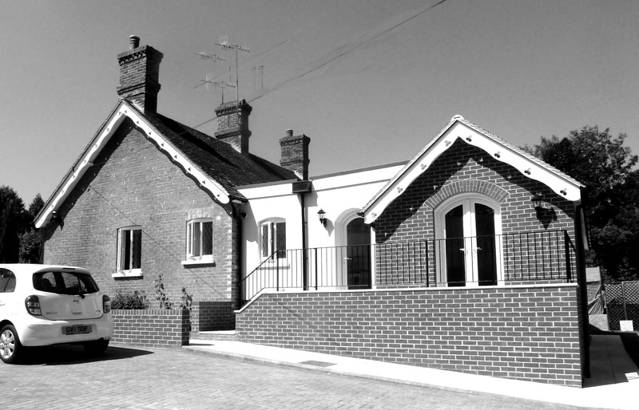

Lingfield United Trust
Almshouses
Accomodation
The Almshouses referred to is a pair of cottages known as HoChee Cottages in Dormansland and we have just recently carried out extensive refurbishment and extension works to these properties. There are currently residents in both cottages.
History and Background - HoChee Cottages
Lingfield United Trust (Formerly Lingfield United Charities) in 2013, commenced and completed the extension and refurbishment of its two alms houses in Plough Road, Dormansland, known as HoChee Cottages. The Trust is responsible for the management and maintenance of these properties and had been planning to upgrade and enlarge the accommodation for some time. Built around 1870 and extended in the 1920s, the cottages were in need of extensive renovation to provide comfortable and energy efficient accommodation appropriate to modern standards. Thanks to a generous grant from the Nancy McIver Trust, this work was made possible and building work commenced in March 2013.
The cottages were completed and handed over to the Trust by the builders, on the 19th July 2013. The result is stunning both outside and internally. Each of the two cottages has been extended to the rear and reorganised inside, to provide a larger sitting room, bedroom and kitchen. The new wet rooms are compliant with disability standards as recommended for alms house accommodation. Their charming outside appearance is retained, with the extension work restricted to the rear in an attractive design.
The architects were Mackellar Schwerdt and the builders were Harbour Building Services Ltd
Why the name HoChee Cottages?
Ho Chee to whom the two cottages are dedicated, was born in 1789 at Hyan-Shan in Canton, China (now known as Guangzhou in the province of Guangdong). He was the son of Ho Foo, a mandarin. It is likely that Ho Chee worked with or for the East India Company (EIC) in Canton and Macao and had an official Government sponsored post.
Ho Chee, who amended his name to John Hochee, (known as HoChee on the cottages) formed an enduring friendship with a John Fullerton Elphinstone sometime after 1830. Elphinstone was born in 1778, the eldest son of William Elphinstone a Director of the East India Company. He went to Canton in 1794 where he was employed by the Company as a 'Writer' (or clerk). He continued to serve the Company until his retirement on the 18th March 1818. In August 1819 John Hochee arrived from Canton to live in Elphinstone’s household in England and from then on Hochee assumed complete administrative responsibility for Elphinstone’s estate. Hochee married Charlotte Mole in the Parish Church at Braughing, Hertfordshire in 1823. John and Charlotte had eight children, all but one born in Lingfield and baptised in the Parish Church.
Hochee’s estate was considerable, as a result of his inheritance under Elphinstone’s will; John Hochee died in Brighton on 1st March 1860 and was buried there in the plot next to his patron and benefactor. Shortly after Hochee’s death, his widow Charlotte built a double cottage on land which was inherited from John Elphinstone, situated at the cross roads at Dormansland; a small piece of land formerly planted with fir and anciently the site of a lime kiln. In May 1874 the cottages were given by Trust Deed to the Vicar and Churchwardens of Lingfield, with an endowment of £50 and were to be known as The HoChee Almshouses, in memory of her late husband. A bust of Hochee stands on a plinth in the hallway, a constant reminder of John Hochee’s life in the village. More information can be found here.
Lingfield United Charities (reg no 200264) took over and managed the cottages in 1953, and in 2013 the Almshouses became the responsibility of Lingfield United Trust (reg no 1150971).